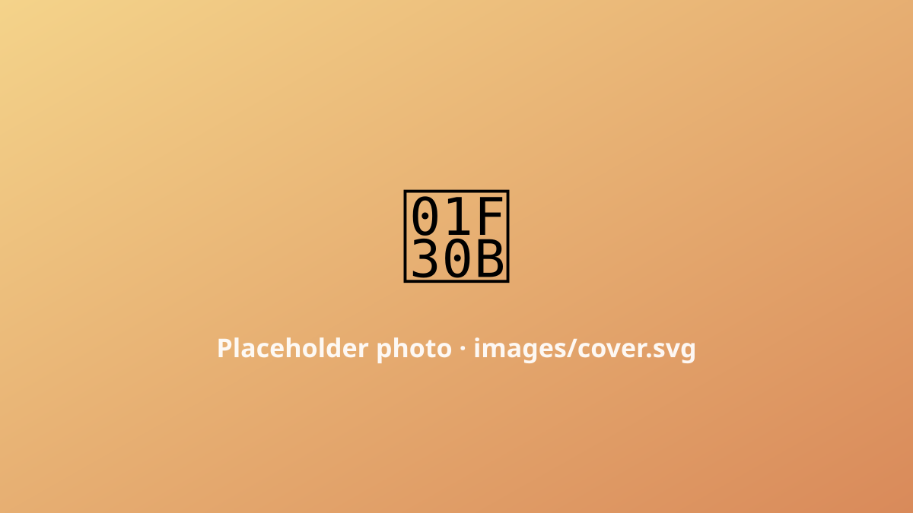

Placeholder ride log
202 kmDistance
1720 mClimbing
★★★★☆Difficulty
2 daysTime
A full lap of Jeju on the coastal road — the whole volcanic island in one long, salt-sprayed ring. There's an official cycle route (the Jeju Fantasy Bike Path) with stamp booths the whole way round if you're into that.

images/ folder.Wind is the real climb
The elevation is gentle, but Jeju's wind decides your day. Ride it clockwise and hope the prevailing wind pushes you home along the back half.
Hallasan in the middle
The volcano sits in the centre the whole ride, appearing and disappearing behind the clouds. (Full write-up coming; this is a placeholder.)
Would I do it again?
Yes — but I'd split it over two days and actually stop for the black-pork and the haenyeo divers instead of chasing the loop.